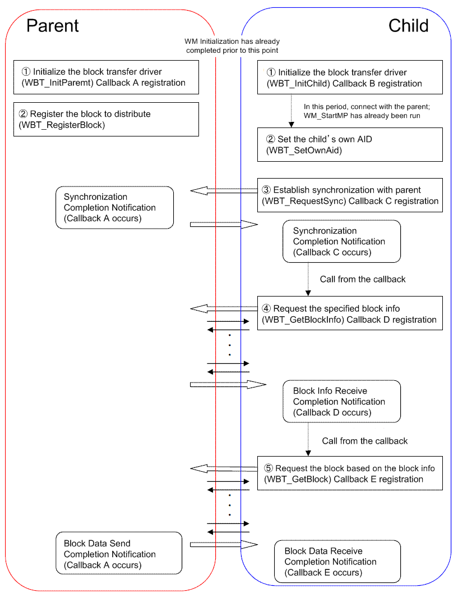

WM block transfer protocol (WBT) is a buffer control library specifically for transferring data to be used under MP communications. Data is distributed efficiently to multiple children without worrying about the data size. Transfer from children to the parent is also possible.
Using WBT
The WBT library only functions as a protocol for splitting data into block units and is not used to perform any actual wireless transmissions. For this reason, it is necessary to use the WM library when exchanging data and to implement MP communications ahead of time using the application. The WBT library is implemented using all or part of the send/receive buffer used for MP communications.
In order to link WBT to MP communications, it is necessary to accept a send buffer from the WBT and notify the WBT of the receive buffer either before or after sending or receiving MP communications, separately from the flow of a series of WBT library function calls. Specifically, call the following WBT functions inside the WM callback 1) when an MP communication connection is established (when calling a WM_StartMP completion callback), 2) when MP data has been sent (when calling the WM_SetMPData completion callback), and 3) when MP data has been received (when calling the callback specified by WM_SetPortCallback).
For example, for the MP communications parent, the completion callback of the WM_SetMPData function calls the WBT_MpParentSendHook function with the buffer for the next MP communication as an argument, and then the buffer is set with the WM_SetMPData function. data_size = WBT_MpParentSendHook(SendBuf, DATA_SIZE_MAX);WM_SetMPData(callback, SendBuf, data_size, 0, 0xffff);
Because these functions only read and write data to an send/receive buffer used for MP communication, they do not strictly need to be called in the situations specified here, but rather may be called sometime before the next MP communication occurs.
Furthermore, since the length of the WBT command wait receive queue is only one, only one WBT command can be registered at a time.((WBT_RequestSync, WBT_GetBlockInfo, WBT_GetBlock, and WBT_PutUserData functions)
Care must be taken because if the next WBT command is issued before the currently executing WBT command terminates, that new command cannot be registered.
Basic Flow of WBT API Calls
The following figure illustrates the process flow for a series of API calls from startup to termination when using WBT.

As described in the section on how to use WBT, WBT really only provides a protocol. Functions such as WM_SetMPData must actually be called for parts with arrows connecting parent and child devices in the figure above. In addition, it is necessary to get a send buffer by calling WBT_MpParentSendHook or WBT_MpChildSendHook before sending MP data, and also to notify WBT of the contents of the received buffer by calling WBT_MpParentRecvHook or WBT_MpChildRecvHook after MP data has been received.
Parent Device Process Flow
WBT_CMD_REQ_GET_BLOCK_DONE, it indicates that one block transfer has completed.
Child Device Process Flow
2006/03/13 Initial version.
CONFIDENTIAL